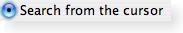

| Home · All Classes · Main Classes · Grouped Classes · Modules · Functions |
The QRadioButton widget provides a radio button with a text label. More...
#include <QRadioButton>
Inherits QAbstractButton.
The QRadioButton widget provides a radio button with a text label.
A QRadioButton is an option button that can be switched on (checked) or off (unchecked). Radio buttons typically present the user with a "one of many" choice. In a group of radio buttons only one radio button at a time can be checked; if the user selects another button, the previously selected button is switched off.
Radio buttons are autoExclusive by default. If auto-exclusive is enabled, radio buttons that belong to the same parent widget behave as if they were part of the same exclusive button group. If you need multiple exclusive button groups for radio buttons that belong to the same parent widget, put them into a QButtonGroup.
Whenever a button is switched on or off it emits the toggled() signal. Connect to this signal if you want to trigger an action each time the button changes state. Otherwise, use isChecked() to see if a particular button is selected.
Just like QPushButton, a radio button displays text, and optionally a small icon. The text can be set in the constructor or with setText(); the icon is set with setIcon().
Important inherited members: text(), setText(), text(), setDown(), isDown(), autoRepeat(), group(), setAutoRepeat(), toggle(), pressed(), released(), clicked(), and toggled().

See also QPushButton, QToolButton, QCheckBox, and GUI Design Handbook: Radio Button.
Constructs a radio button with the given parent, but with no text or pixmap.
The parent argument is passed on to the QAbstractButton constructor.
Constructs a radio button with the given parent and a text string.
The parent argument is passed on to the QAbstractButton constructor.
| Copyright © 2006 Trolltech | Trademarks | Qt 4.1.2 |